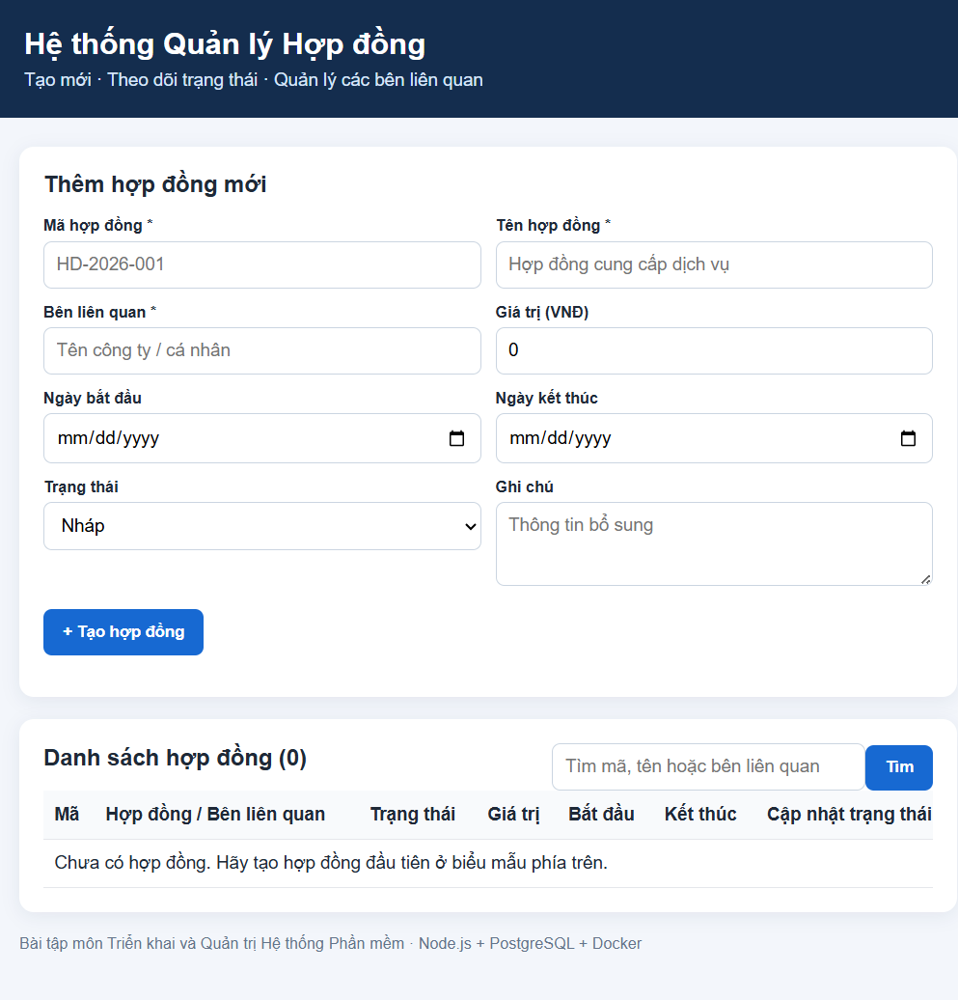
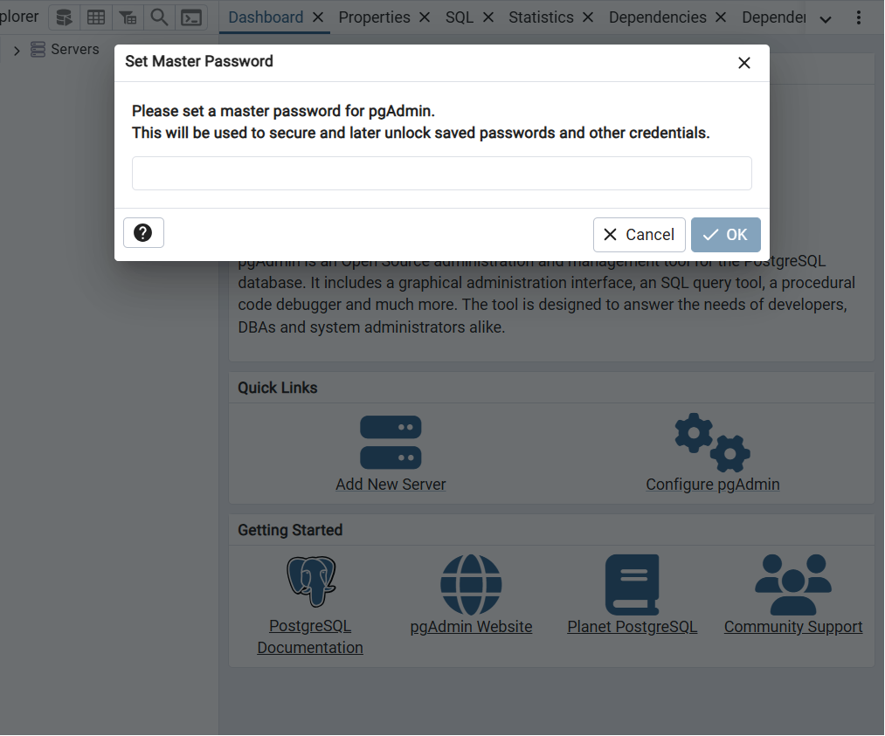
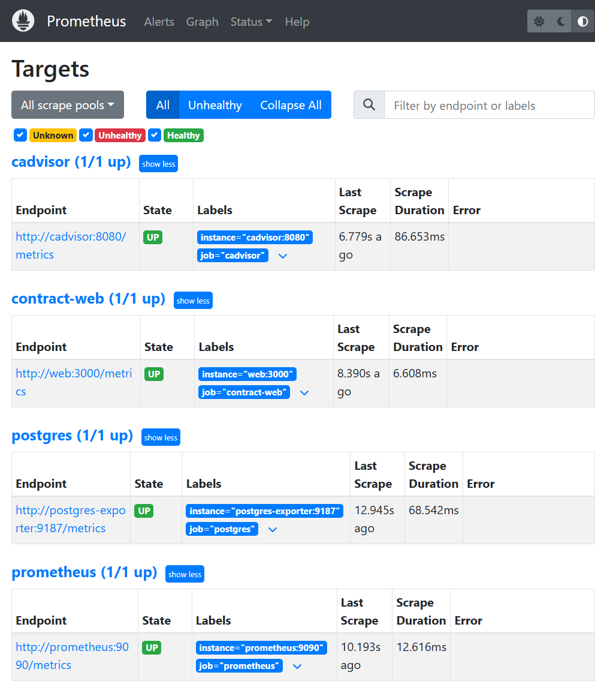
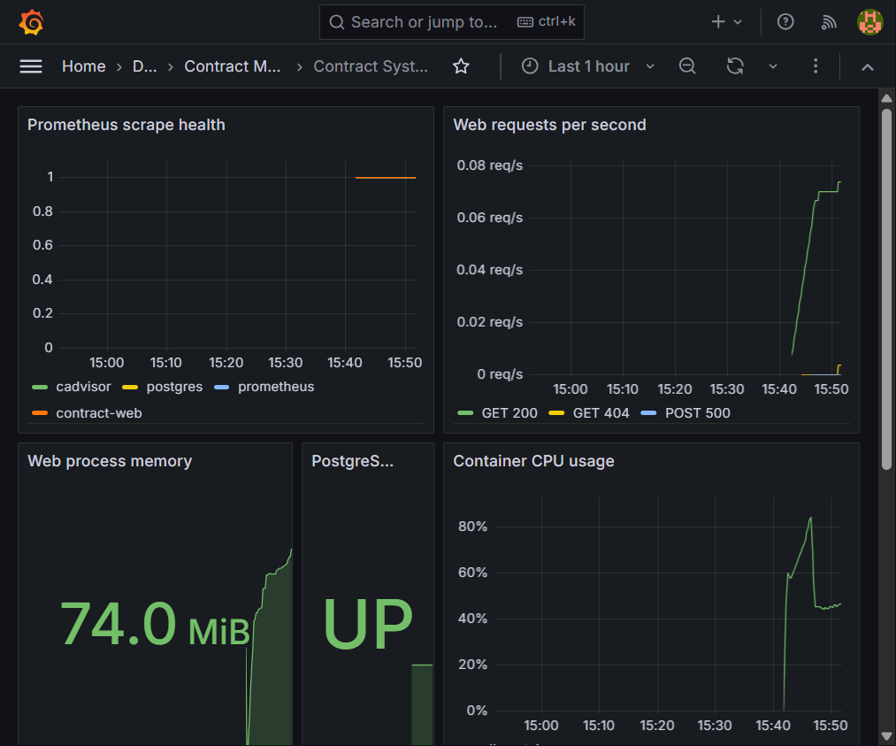

Báo cáo trình bày quá trình xây dựng một hệ thống quản lý hợp đồng có thể triển khai cục bộ bằng Docker Compose. Ứng dụng web viết bằng Node.js và Express, lưu dữ liệu trên PostgreSQL, cung cấp giao diện quản trị cơ sở dữ liệu pgAdmin, được đặt sau Nginx reverse proxy. Prometheus thu thập metrics, Grafana hiển thị dashboard, còn Loki và Promtail tập trung log container.
Mục tiêu thực hành là ghép các thành phần triển khai, giám sát, ghi log và hardening thành một hệ thống nhất quán; kiểm tra từng đường đi dữ liệu; đồng thời tạo hướng dẫn có thể lặp lại trên Docker Desktop.
| Hạng mục | Kết quả kiểm chứng |
|---|---|
| Website, reverse proxy, database | Website HTTP trả 200; endpoint /health kiểm tra kết nối DB và trả trạng thái thành công. |
| Prometheus | Targets của web, PostgreSQL exporter, cAdvisor và Prometheus đều ở trạng thái UP. |
| Grafana | Dashboard được provision, hiển thị health, request rate, bộ nhớ, PostgreSQL, CPU/container và log Loki. |
| Loki / LogQL | Ba truy vấn mẫu được gửi tới Loki, API trả success và có streams kết quả. |
| GitHub và thông tin bìa | Cần MSSV, thông tin học phần/trường và repository GitHub do sinh viên cung cấp hoặc tạo sau. |
Phạm vi số liệu: trạng thái trên được ghi nhận khi chạy trên máy phát triển ngày 22/10/2026. Đây là kiểm thử cục bộ, không thay thế kiểm thử tải hoặc đánh giá an ninh cho môi trường Internet.
Toàn bộ dịch vụ được điều phối bằng Docker Compose; mã nguồn và cấu hình cần được quản lý trên GitHub với README và lịch sử commit có ý nghĩa. Hệ thống cần có ứng dụng kết nối cơ sở dữ liệu, công cụ quản trị DB, Nginx reverse proxy, giám sát Prometheus/Grafana, logging Loki/Promtail và các biện pháp hardening.
Hệ thống triển khai cục bộ trên Docker Desktop. PostgreSQL không mở cổng trực tiếp ra host; người dùng truy cập website qua Nginx tại cổng 8080/8443. Grafana, Prometheus và Loki có các cổng host riêng để phục vụ quản trị và demo. pgAdmin được reverse proxy dưới đường dẫn /pgadmin/.
Ba network được dùng để phân vùng luồng giao tiếp. Nginx tiếp nhận truy cập từ host trên hai cổng web; web và pgAdmin giao tiếp với PostgreSQL qua backend network nội bộ. Monitoring network kết nối các exporter, Prometheus, Grafana, Loki và Promtail.
Mạng backend được khai báo internal: true. Database không có ports publish ra host. Nginx kết nối frontend để proxy web/pgAdmin và monitoring để phục vụ log discovery theo cấu hình hiện tại.
/ đến web:3000 và /pgadmin/ đến dịch vụ pgAdmin.contracts; ứng dụng trả trang danh sách hoặc thông báo phù hợp.Prometheus scrape metrics mỗi 15 giây từ web, cAdvisor, postgres-exporter và chính Prometheus. Ứng dụng dùng prom-client để xuất default process metrics và counter HTTP. Promtail khám phá container qua Docker socket, đọc log container và gửi tới Loki. Grafana đọc hai datasource được provision để hiển thị time series và log.
| Cột | Kiểu / ràng buộc | Ý nghĩa |
|---|---|---|
| id | SERIAL PRIMARY KEY | Khóa định danh nội bộ. |
| contract_code | VARCHAR(40), UNIQUE, NOT NULL | Mã hợp đồng duy nhất. |
| title, related_party | VARCHAR(200), NOT NULL | Tên hợp đồng và bên liên quan. |
| status | VARCHAR(30), mặc định “Nháp” | Nháp, Đang hiệu lực, Hết hạn, Đã hủy. |
| contract_value | NUMERIC(14,2) | Giá trị tiền tệ. |
| start_date, end_date | DATE | Khoảng thời gian hiệu lực. |
| notes, created_at | TEXT, TIMESTAMPTZ | Ghi chú và thời điểm tạo. |
Bảng được khởi tạo bởi initDb() khi ứng dụng khởi động. Mỗi hợp đồng có mã duy nhất; form web có thể tạo, tìm kiếm và thay đổi trạng thái.
Compose mô tả các dịch vụ web, db, pgadmin, nginx, prometheus, grafana, loki, promtail, cAdvisor và postgres-exporter. Các dịch vụ dùng volume named cho dữ liệu PostgreSQL, pgAdmin, Prometheus, Grafana và Loki; cấu hình Nginx, Prometheus, Loki, Promtail và Grafana được bind mount chỉ đọc khi phù hợp.
Copy-Item .env.example .env
# Sửa tất cả mật khẩu trong .env thành giá trị riêng, đủ mạnh.
New-Item -ItemType Directory -Force nginx/certs
docker run --rm -v "${PWD}/nginx/certs:/certs" alpine/openssl req -x509 -nodes -days 365 -newkey rsa:2048 -keyout /certs/self-signed.key -out /certs/self-signed.crt -subj "/CN=localhost"
docker compose --env-file .env up -d --build
docker compose ps
Đợi database healthcheck chuyển sang healthy trước khi ứng dụng khởi động. Lần đầu Docker cần tải image và build backend; thời gian phụ thuộc kết nối mạng. Xem log bằng docker compose logs -f web.
docker compose ps docker compose logs --tail 100 web db nginx prometheus grafana loki promtail docker compose down
Không dùng docker compose down -v nếu cần giữ dữ liệu volume. Lệnh đó xóa cả database và dữ liệu giám sát. Thông tin tài khoản do các biến môi trường trong file .env quyết định.
| Dịch vụ | Địa chỉ local |
|---|---|
| Website | http://localhost:8080 |
| HTTPS tự ký | https://localhost:8443 |
| pgAdmin | http://localhost:8080/pgadmin/ |
| Prometheus | http://localhost:9090 |
| Grafana | http://localhost:3001 |
| Loki ready | http://localhost:3100/ready |
Ứng dụng cung cấp form tạo hợp đồng, bảng danh sách, tìm kiếm theo mã/tên/bên liên quan và thao tác cập nhật trạng thái. Trường mã, tên và bên liên quan là bắt buộc; trạng thái được giới hạn trong danh sách cho phép. Truy vấn ghi và tìm kiếm dùng parameterized query để tránh ghép trực tiếp dữ liệu người dùng vào SQL.
Endpoint /health thực hiện SELECT 1 trên PostgreSQL và trả JSON trạng thái. Endpoint /metrics cung cấp định dạng Prometheus. Container backend chạy Node.js với user không phải root.


Để kết nối database từ pgAdmin, thêm server với Host db, Port 5432, Maintenance database theo POSTGRES_DB, username/password theo POSTGRES_USER và POSTGRES_PASSWORD. Tài khoản dùng đăng nhập pgAdmin riêng với tài khoản kết nối database.
Nginx nhận request trên cổng 80 và 443. Route mặc định chuyển tới Express qua tên dịch vụ Compose web:3000; route /pgadmin/ chuyển tới pgAdmin và đặt các header cần thiết cho ứng dụng chạy dưới subpath. Nginx chuyển tiếp host và địa chỉ client cho backend.
Chứng chỉ tự ký được tạo trong thư mục nginx/certs với CN=localhost và mount read-only vào container. HTTPS dùng TLS 1.2/1.3. Trình duyệt sẽ cảnh báo vì chứng chỉ không được CA công cộng ký; chứng chỉ này chỉ phù hợp môi trường học tập/local.
| Header | Giá trị / mục đích |
|---|---|
| X-Content-Type-Options | nosniff, hạn chế MIME sniffing. |
| X-Frame-Options | DENY, hạn chế nhúng trang vào frame. |
| Referrer-Policy | strict-origin-when-cross-origin. |
| Permissions-Policy | Tắt camera, microphone và geolocation. |
| Content-Security-Policy | Giới hạn nguồn mặc định; cho phép font và ảnh data URI cần cho giao diện pgAdmin. |
Kiểm tra ngày 22/10/2026 cho thấy trang gốc trả HTTP 200. Các header bảo mật nêu trên có trong response. CSP được điều chỉnh với font-src 'self' data: để font nhúng của pgAdmin hoạt động, đồng thời vẫn giữ các nguồn mặc định giới hạn.
Nginx đang thêm Strict-Transport-Security trên virtual host HTTPS. Không bật HSTS trên production nếu TLS, domain và quy trình chứng chỉ chưa được thiết kế đúng.
Prometheus dùng chu kỳ scrape 15 giây. Các job được cấu hình gồm Prometheus, contract-web tại /metrics, cAdvisor và postgres-exporter. PostgreSQL được giám sát qua exporter; không publish cổng 5432 ra host.

Grafana tự động provision datasource Prometheus và Loki. Dashboard “Contract System Overview” gồm trạng thái scrape, request rate theo method/status, bộ nhớ tiến trình web, trạng thái PostgreSQL exporter, CPU và working-set memory container, cùng log ứng dụng lấy từ Loki.

Kết quả kiểm tra từ API Prometheus ghi nhận target cadvisor, contract-web, postgres và prometheus đều có health=up và không có lastError. Dashboard được tải qua API Grafana với UID contract-system-overview.
Promtail khám phá Docker container qua Docker socket read-only, gắn label tên container và log stream, sau đó gửi log tới Loki qua endpoint push nội bộ. Grafana dùng datasource Loki cho Explore và panel log ứng dụng. Loki API sẵn sàng trên cổng 3100.
1. Toàn bộ log ứng dụng web:
{container="contract-web"}
2. Log phản hồi lỗi của Nginx:
{container="contract-nginx"} |= " 5"
3. Tìm lỗi trong web và Nginx:
{container=~"contract-web|contract-nginx"} |~ "(?i)error|exception|failed"
Ba selector trên được gửi tới Loki API /loki/api/v1/query_range. Cả ba trả trạng thái success; lần kiểm tra thu được lần lượt 2, 1 và 1 streams. Query đầu tiên phù hợp để kiểm tra log web; truy vấn thứ hai lọc status code 5xx trong log Nginx; truy vấn cuối tìm các từ khóa lỗi không phân biệt hoa thường.
Label thực tế phụ thuộc metadata Docker và pipeline Promtail; khi môi trường khác, mở Explore, chọn datasource Loki và kiểm tra label trước khi dùng selector. Dashboard có panel “Recent application logs” dùng selector web.
Log ứng dụng là dữ liệu vận hành. Không ghi password, token, dữ liệu cá nhân hoặc nội dung hợp đồng nhạy cảm vào log. Cần cấu hình retention và dung lượng lưu trữ phù hợp nếu mở rộng.
node, không phải root.tmpfs: /tmp, cap_drop: ALL, no-new-privileges.internal: true; database không publish port..env và private key theo .gitignore; giá trị mật khẩu được truyền qua environment.Mẫu .env.example chứa mật khẩu demo và bắt buộc phải đổi trước khi chia sẻ hoặc triển khai. Cấu hình Promtail mount Docker socket read-only nhưng vẫn có quyền quan sát metadata Docker; cAdvisor dùng privileged: true để đọc số liệu host và là ngoại lệ quyền cao. Những cấu hình này chỉ nên chạy local/lab và cần rà soát trước production.
Nginx hiện gửi X-Powered-By: Express từ ứng dụng; có thể tắt header này để giảm lộ thông tin stack. CSP có unsafe-inline nhằm tương thích ứng dụng hiện tại và chưa phải CSP nghiêm ngặt. Cần rà soát các điểm này nếu triển khai Internet-facing.
| Kiểm tra | Kết quả |
|---|---|
| Docker Compose build/up | Hoàn tất; các container được tạo và chạy. |
| PostgreSQL | Container healthy. |
| HTTP /health | HTTP 200. |
| Nginx website + headers | HTTP 200, headers kỳ vọng hiện diện. |
| Prometheus targets | 4 jobs đang UP. |
| Grafana dashboard | API trả dashboard đúng UID. |
| Loki LogQL | 3 truy vấn success, có streams. |
| pgAdmin | Giao diện tải được; cần hoàn tất master password và đăng ký DB. |
Đề tài đã tích hợp ứng dụng quản lý hợp đồng với PostgreSQL, pgAdmin, Nginx, Prometheus, Grafana, Loki và Promtail bằng Docker Compose. Kết quả kiểm thử local xác nhận đường đi web/DB, metrics, dashboard và LogQL hoạt động. Dashboard được provision tự động để giảm thao tác cấu hình thủ công khi khởi chạy.
.env từ .env.example; đặt mật khẩu riêng đủ mạnh, không dùng mật khẩu mẫu.db, và chụp ảnh màn hình đã kết nối tới database/bảng contracts.Trong thư mục project, khởi tạo Git và tạo các commit theo thay đổi thực tế. Không đưa mật khẩu .env, private key hoặc dữ liệu thật vào repository.
git init git add app nginx docker-compose.yml .env.example README.md git commit -m "Deploy contract web with PostgreSQL and Nginx" git add prometheus grafana git commit -m "Add Prometheus monitoring and Grafana dashboard" git add loki promtail git commit -m "Add centralized logging with Loki and Promtail" git remote add origin https://github.com/<account>/<repository>.git git push -u origin main
Với project hiện tại, cần kiểm tra Git status trước khi stage và không tạo commit rỗng. Nếu cần đưa báo cáo vào Git, thực hiện commit tài liệu riêng để lịch sử vẫn phản ánh đúng nội dung.
db, truy vấn bảng hợp đồng.Báo cáo cần được cập nhật tên/MSSV, URL GitHub và ảnh kết quả demo trước khi nộp chính thức.